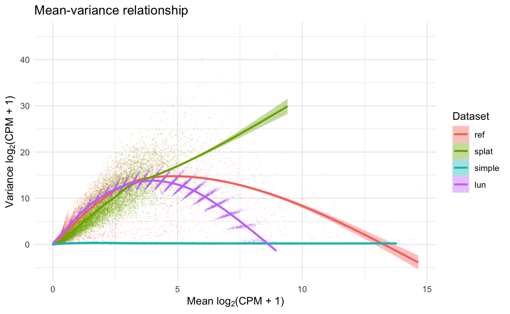
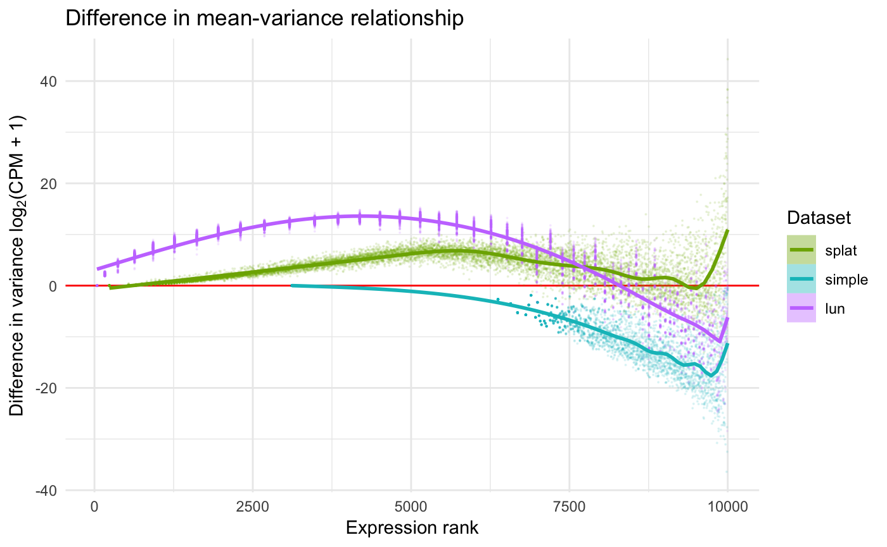
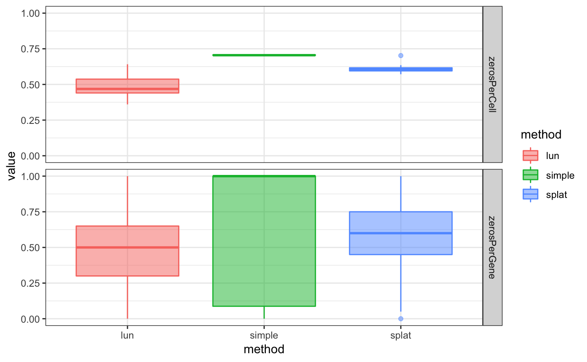

vignettes/CaseStudy-SingleCellSimulation.Rmd
CaseStudy-SingleCellSimulation.RmdAbstract
“In this vignette, we illustrate a simple approach to using the SummarizedBenchmark framework for organizing benchmarks with complex outputs, i.e. when methods return non-vector-like objects. This approach is demonstrated with a comparison of simulators for single-cell RNA-seq data implemented in the splatter package. SummarizedBenchmark package version: 2.3.4”Simulated data sets with known ground truths are often used for developing and comparing computational tools for genomic studies. However, the methods and approaches for simulating complex genomic data are rarely unified across studies. Recognizing this problem in the area of single-cell RNA-sequencing (scRNA-seq), the splatter package provides a uniform API for several “simulators” of scRNA-seq data, including the authors’ own “Splat” simulator (Zappia, Phipson, and Oshlack 2017). In the splatter package, given a set of simulation parameters, each method returns a SingleCellExperiment object of simulated scRNA-seq counts.
Using comparisons presented in (Zappia, Phipson, and Oshlack 2017), we illustrate how the SummarizedBenchmark framework can be used to perform comparisons when the output of each method is more complex than a vector of numbers (e.g. a SingleCellExperiment).
Parameters for the simulators implemented in splatter can either be manually specified or estimated using existing data. Here, we use RSEM counts for a subset of high coverage samples in the fluidigm data set included in the scRNAseq package. The data is made available as a SummarizedExperiment object.
library("splatter")
library("scRNAseq")
fluidigm <- ReprocessedFluidigmData()
se <- fluidigm[, colData(fluidigm)[, "Coverage_Type"] == "High"]
assays(se) <- assays(se)["rsem_counts"]
assayNames(se) <- "counts"For the purposes of this vignette, we only use a subset of the samples and genes.
To make comparisons with the simulated data sets easier, we convert the SummarizedExperiment object to the SingleCellExperiment class.
Each of the simulators in the splatter package follow the [prefix]Simulate naming convention, with the corresponding parameter estimation function, [prefix]Estimate. Here, we use three methods included in the comparisons of (Zappia, Phipson, and Oshlack 2017).
bd <- BenchDesign() %>%
addMethod(label = "splat",
func = splatSimulate,
params = rlang::quos(params = splatEstimate(in_data),
verbose = in_verbose,
seed = in_seed)) %>%
addMethod(label = "simple",
func = simpleSimulate,
params = rlang::quos(params = simpleEstimate(in_data),
verbose = in_verbose,
seed = in_seed)) %>%
addMethod(label = "lun",
func = lunSimulate,
params = rlang::quos(params = lunEstimate(in_data),
verbose = in_verbose,
seed = in_seed))Each simulator returns a single SingleCellExperiment object containing the simulated scRNA-seq counts. However, to fit the SummarizedBenchmark structure, each method in the BenchDesign must return a vector or a list. By default, if methods return objects which cannot be easily coerced to a matrix structure, the outputs from each assay is captured and combined using rbind. To prevent the warnings from printing, the user may specify post = list for all methods. However, note that this will result in all method output being wrapped in a list.
Using the "counts" assay of the fluidigm data set as input, we generate simulated data with the three methods.
fluidigm_dat <- list(in_data = assay(sce, "counts"),
in_verbose = FALSE,
in_seed = 19120128)
sb <- buildBench(bd, data = fluidigm_dat) ## Warning in FUN(X[[i]], ...):
## Method outputs could not be reduced to matrix.## class: SummarizedBenchmark
## dim: 1 3
## metadata(1): sessions
## assays(1): default
## rownames: NULL
## rowData names(1): default
## colnames(3): splat simple lun
## colData names(7): func.pkg func.pkg.vers ... param.seed
## session.idxThe simulated data sets are returned as a single row in the assay of the SummarizedBenchmark object, with each column containing a list with a single SingleCellExperiment object.
## splat simple lun
## [1,] ? ? ?## [1] "SingleCellExperiment" "SingleCellExperiment" "SingleCellExperiment"Now that we have our set of simulated data sets, we can compare the behavior of each simulator. Fortunately, the splatter package includes two useful functions for comparing SingleCellExperiment objects (compareSCEs and diffSCEs). The assay of the SummarizedBenchmark can be passed directly to these functions. We also concatenate the original fluidigm data set, sce, with the simulated data sets for comparison.
res_compare <- compareSCEs(c(ref = sce, assay(sb)[1, ]))
res_diff <- diffSCEs(c(ref = sce, assay(sb)[1, ]), ref = "ref")While these functions produce several metrics and plots, we only include two for illustration. More details on the output of these functions can be found in the documentation of the splatter package.


While (conveniently) functions already existed for comparing the simulated data sets, we can also define comparison metrics using the SummarizedBenchmark framework with addPerformanceMetrics(). We illustrate this feature using the “zeros per cell” and “zeros per gene” metrics shown in Figure 3 of (Zappia, Phipson, and Oshlack 2017). Since the metric for each method is a vector (e.g. of zeros per cell) and not a single value, we again use list to wrap the output in the evalFunction.
sb <- sb %>%
addPerformanceMetric(
assay = "default",
evalMetric = "zerosPerCell",
evalFunction = function(query, truth) {
colMeans(assay(query[[1]], "counts") == 0)
}) %>%
addPerformanceMetric(
assay = "default",
evalMetric = "zerosPerGene",
evalFunction = function(query, truth) {
rowMeans(assay(query[[1]], "counts") == 0)
} )Next, the metrics are calculated using estimatePerformanceMetrics. For plotting, we only keep the label, value, and performanceMetric columns of the returned table.
sbmets <- estimatePerformanceMetrics(sb, tidy = TRUE)
sbmets <- dplyr::select(sbmets, label, value, performanceMetric)
head(sbmets)## label value performanceMetric
## 1 splat 0.606, 0.... zerosPerCell
## 2 simple 0.7076, .... zerosPerCell
## 3 lun 0.3602, .... zerosPerCell
## 4 splat 0.7, 0.4.... zerosPerGene
## 5 simple 1, 1, 0..... zerosPerGene
## 6 lun 0.7, 0.4.... zerosPerGeneNotice that the value is a list for each method and metric. These vectors can be expanded using tidyr::unnest.
## label performanceMetric value
## 1 splat zerosPerCell 0.6060
## 2 splat zerosPerCell 0.7024
## 3 splat zerosPerCell 0.5881
## 4 splat zerosPerCell 0.5717
## 5 splat zerosPerCell 0.5932
## 6 splat zerosPerCell 0.6351Finally, the performance metrics can be explored using standard plotting functions.
ggplot(sbmets, aes(x = label, y = value,
color = label, fill = label)) +
geom_boxplot(alpha = 1/2) +
xlab("method") +
scale_color_discrete("method") +
scale_fill_discrete("method") +
facet_grid(performanceMetric ~ .) +
theme_bw()
An advantage of the SummarizedBenchmark framework is that rerunning the comparisons with a new data set is as simple as calling buildBench with the same BenchDesign object paired with new data = input. To illustrate this, we run the same simulators again, but with simulation parameters estimated using the example single-cell count data included with the scater package.
data(sc_example_counts, package = "scater")
scec <- SingleCellExperiment(assays = list(counts = sc_example_counts))
scater_dat <- list(in_data = scec,
in_verbose = FALSE,
in_seed = 19120128)
buildBench(bd, data = scater_dat)## Warning in FUN(X[[i]], ...):
## Method outputs could not be reduced to matrix.## class: SummarizedBenchmark
## dim: 1 3
## metadata(1): sessions
## assays(1): default
## rownames: NULL
## rowData names(1): default
## colnames(3): splat simple lun
## colData names(7): func.pkg func.pkg.vers ... param.seed
## session.idxZappia, Luke, Belinda Phipson, and Alicia Oshlack. 2017. “Splatter: Simulation of Single-Cell Rna Sequencing Data.” Genome Biology. https://doi.org/10.1186/s13059-017-1305-0.